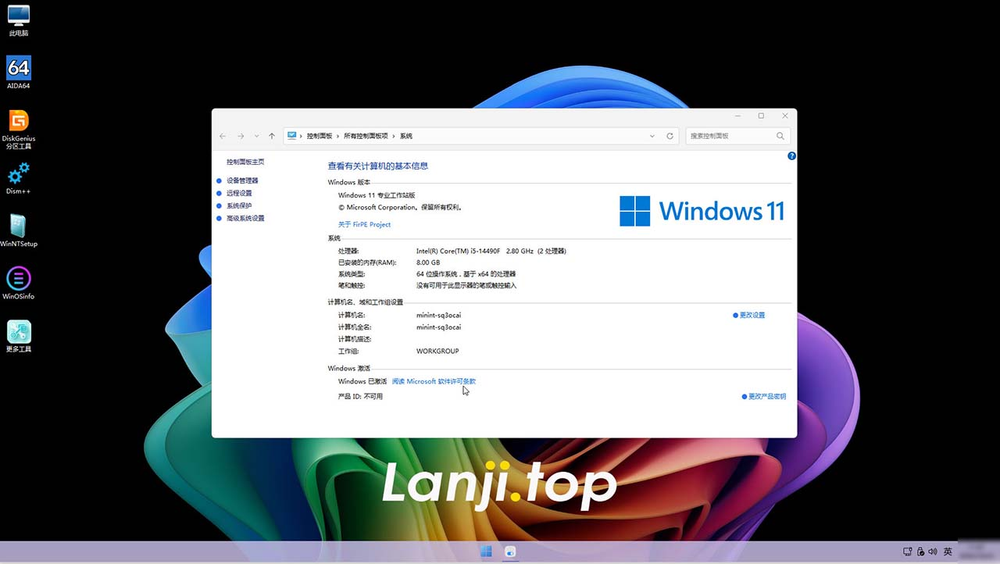
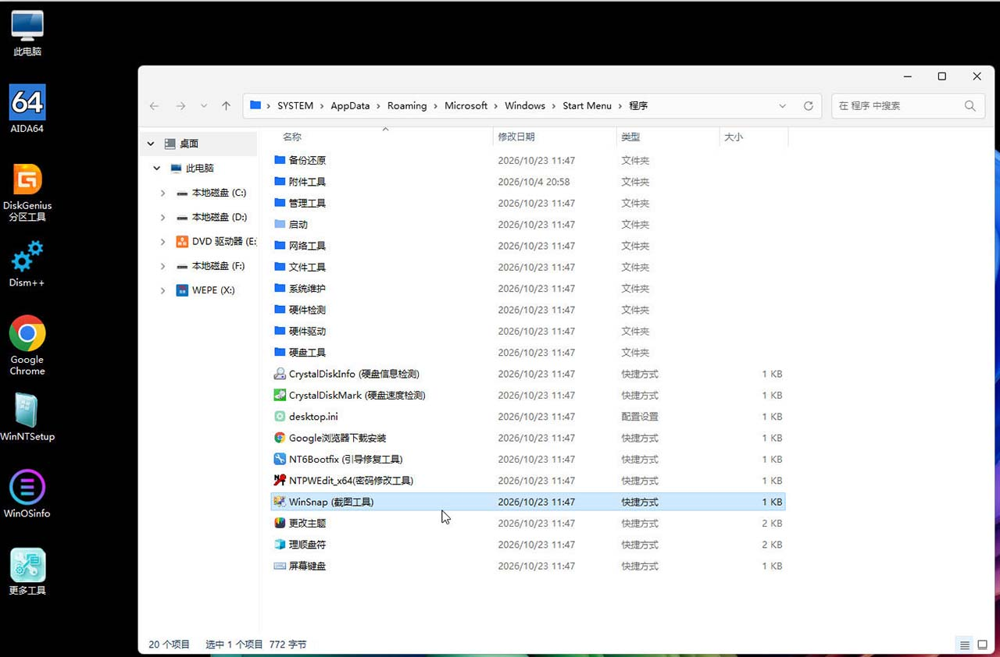

一个干净有效的系统，从一个纯净的PE开始。
纯净PE，电脑维护启动盘，精简无捆绑软件，适合电脑维修、装机维护使用。
功能包含：硬盘分区管理、Windows系统安装、开机密码清除、数据备份与恢复、硬盘测试、坏盘检测、系统修复、联网浏览等。
支持传统Legacy以及UEFI双启动，兼容新旧台式机、笔记本，U盘制作简单，维护必备工具。
可自主选择的引导方式：Windows11 PE高画质引导（默认）、Windows11 PE低画质引导、Windows10 PE旧电脑引导（集成微PE）。
维护工具即时持续更新，以适应硬件升级要求。
纯净PE镜像文件，可以前往【下载】栏目获取。
PE截图：


免责声明：本站所有资料均来源于互联网，仅供学习和研究使用，请于测试后24小时内自行销毁，版权归原作者所有，如需长期使用，请购买正版。